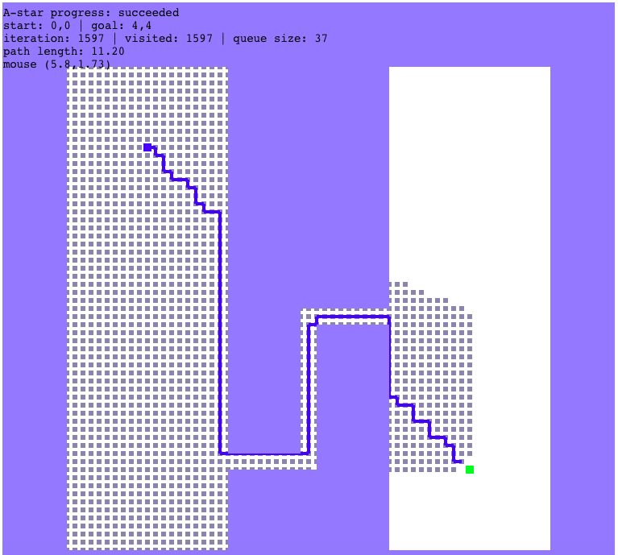
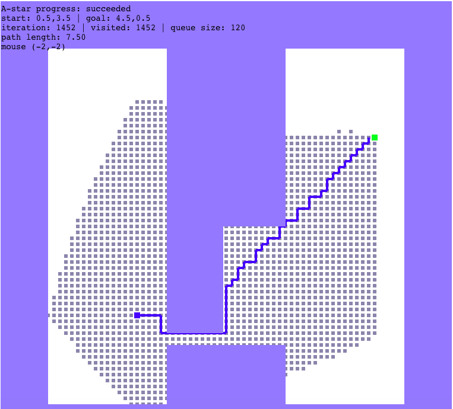
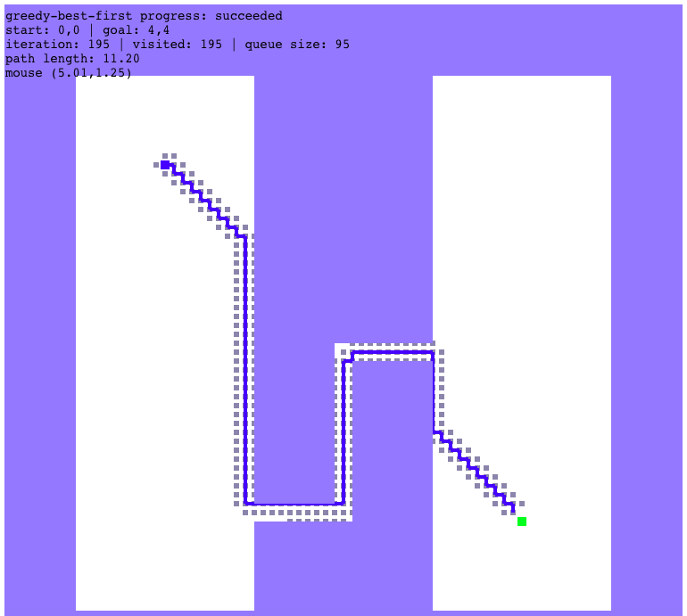
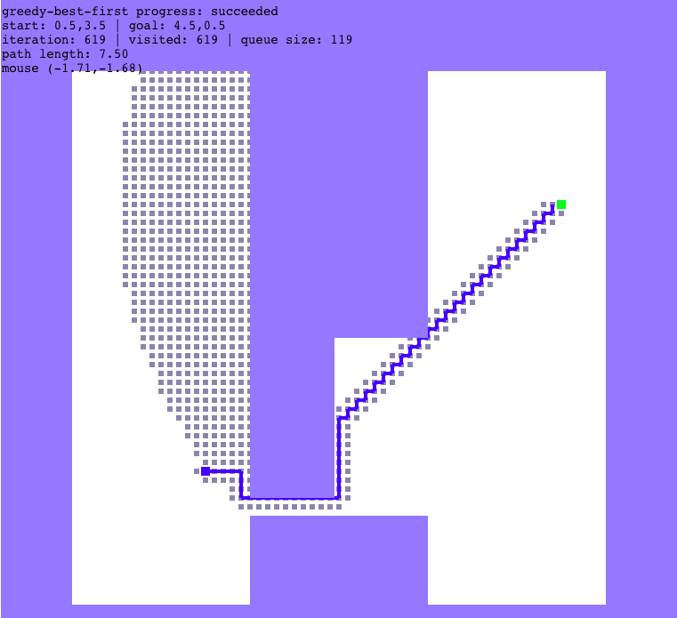
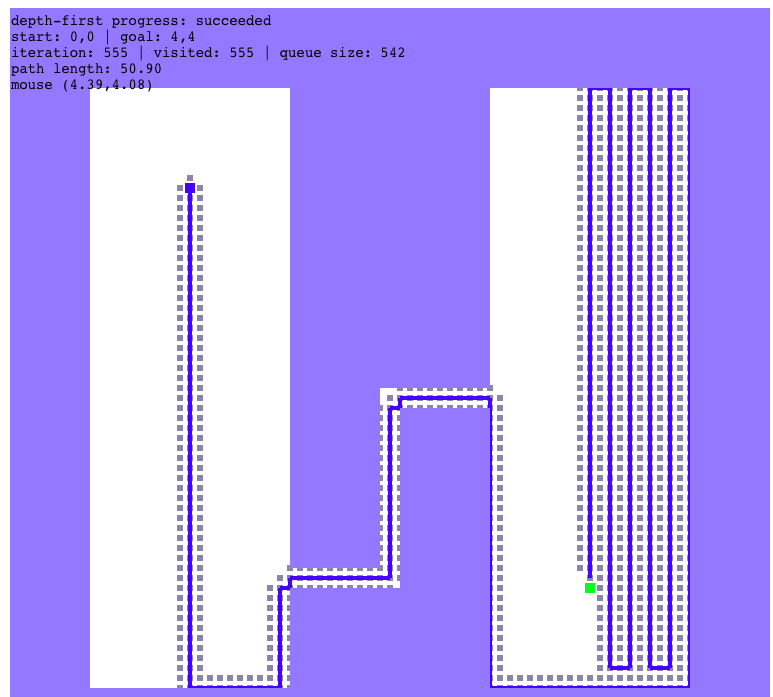
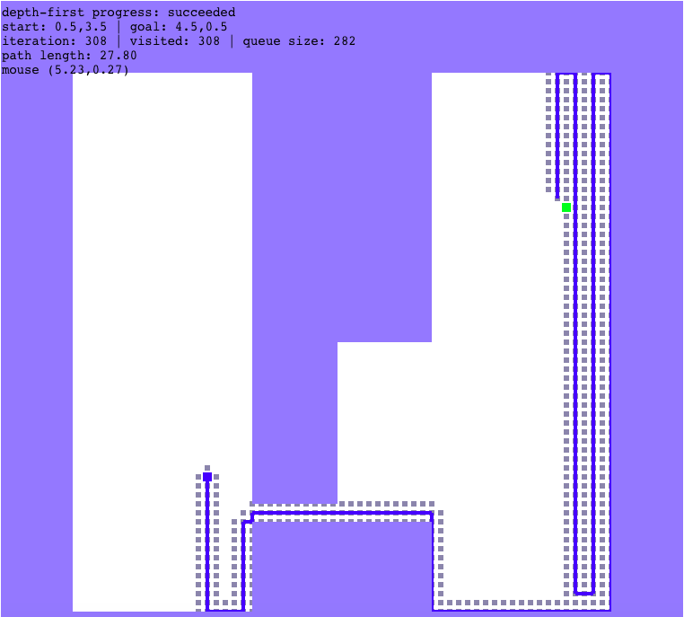
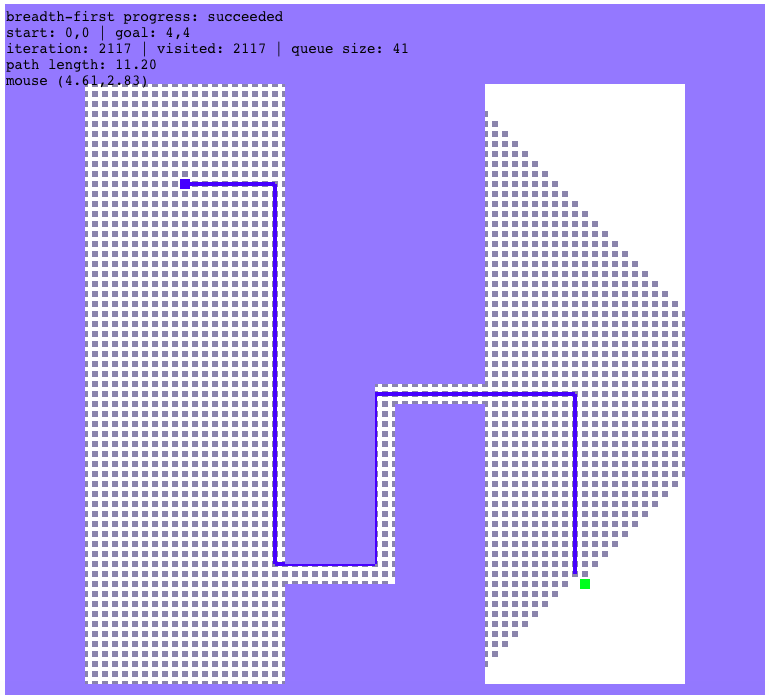
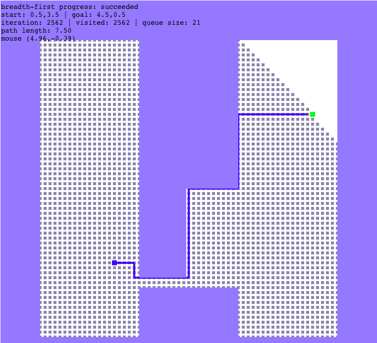

Zheng Dong ME567 homework1 report
1. Result for A-star algorithm.


Based on the plots, we can see that A-star's advantage is that the designed path is always the
shortest path. However, the searched range is relatively large to ensure the algorithm will always find the
shortest path.
2. Result for greedy-best-first algorithm.


Based on the plots, we can see that greedy-best-first's advantage is that it will approach
the goal point very quickly when there is no obstacle between start and goal point, which will have much
fewer searched points. However, if there is obstacle between them, the search path may turn to totally wrong
direction like the second plot showed, which will increase the search range. Besides, the designed path is not always
the shortest path, which will depend on the search priority.
3. Result for depth-first algorithm.


Based on the plots, we can see that depth-first's search algorithm totally depends on the serach priority
we design. If the priority is not suitable, it will increase the search range like the plots. Besides, the designed path
is usually not the shortest path.
4. Result for breadth-first algorithm.


Based on the plots, we can see that greedy-best-first's advantage is that the designed path
will always be the shortest path. However, breadth-first algorithm's search range is the largest among
four algorithms as the plots showed since it will search all the points layer by layer.